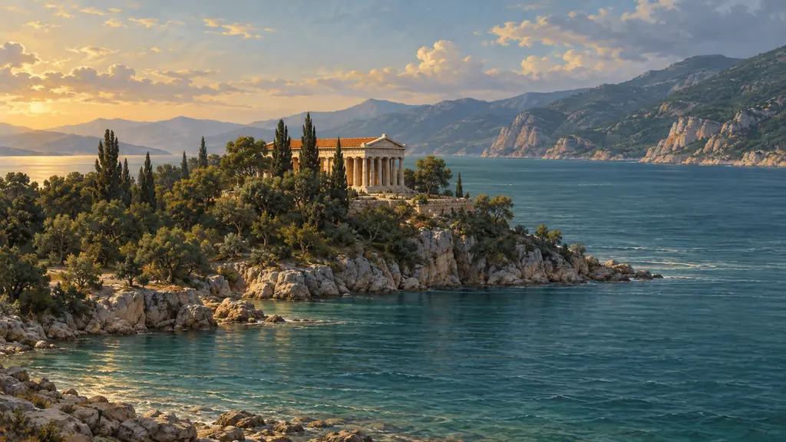
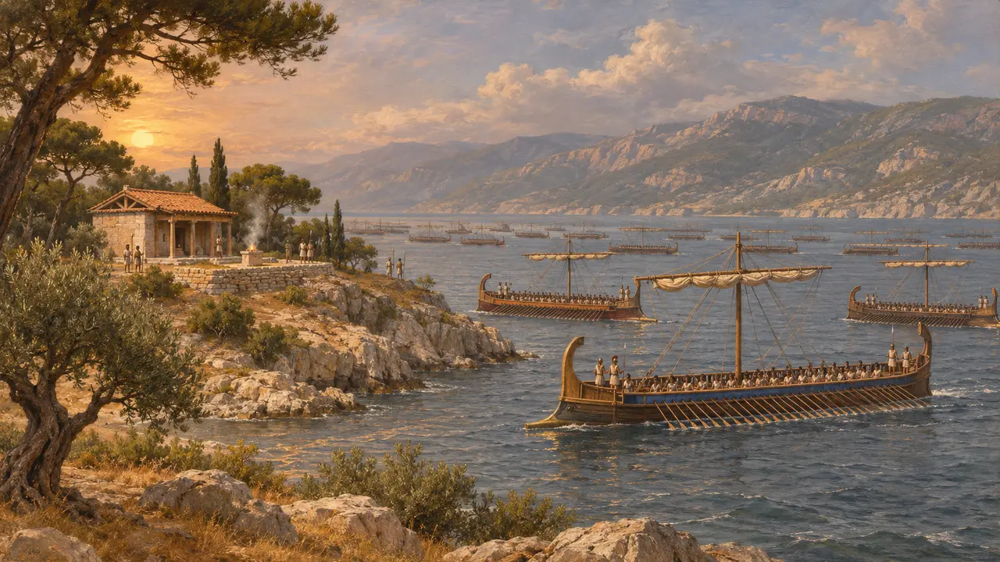
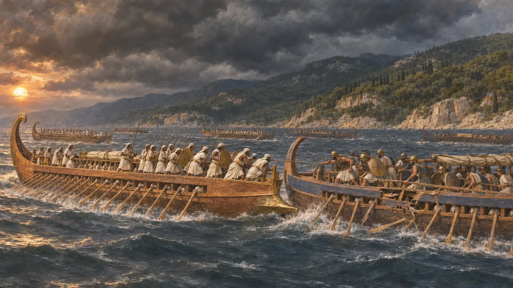
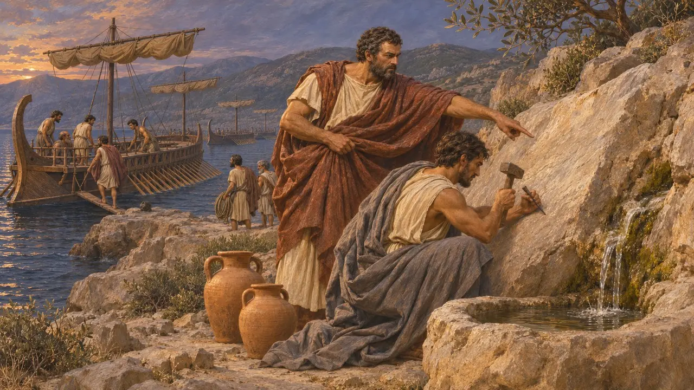
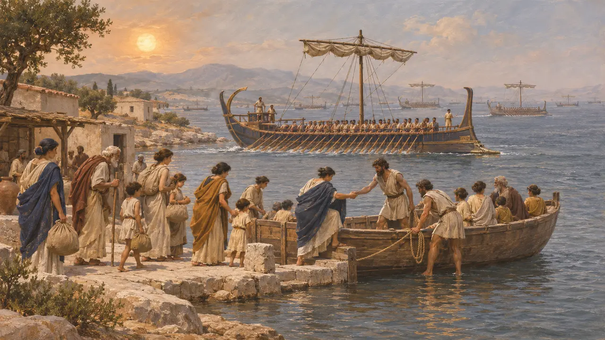
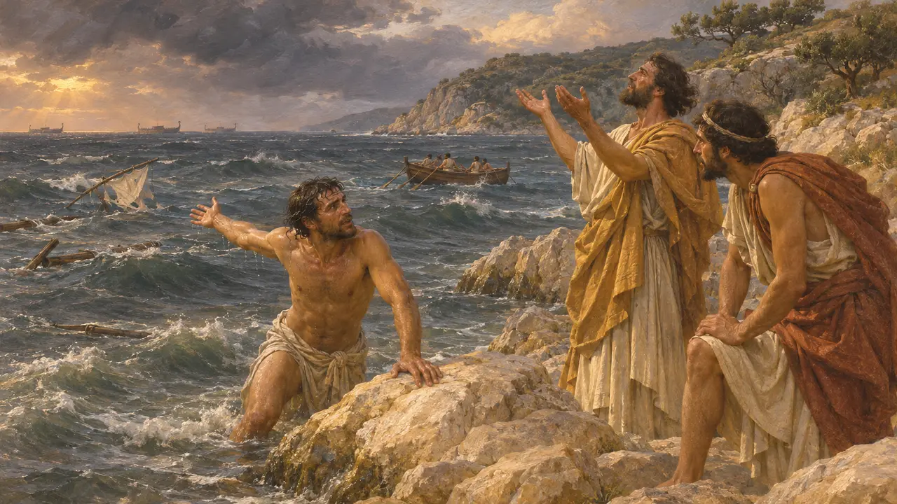

Артемисий
Мыс на севере Эвбеи, где в 480 г. до н. э. три дня шли морские сражения
В игре: Уровень 10: Жаркие Ворота
Артемисий — мыс на северной оконечности Эвбеи, где летом 480 года греческий флот преградил путь царским кораблям, пока Леонид удерживал Фермопилы на материке напротив. После трёх дней боёв и тяжёлых потерь с обеих сторон греки, узнав о падении прохода, ушли на юг и позже собрались у Саламина. О битве известно почти исключительно от греческих авторов, прежде всего Геродота; ни один персидский источник о ней не упоминает.
В игре: Артемисий упоминается в игре лишь в заметке летописи: три дня, пока держался проход, греческий флот сражался с флотом Царя. Заметка согласуется с Геродотом.

Мыс и замысел греков
Античное свидетельствоГеродот пишет, что греки решили одновременно удерживать проход у Фермопил и узкие воды у Артемисия, чтобы войско и флот Царя не могли наступать бок о бок. Мыс получил имя от святилища Артемиды. Флотом командовал спартанец Еврибиад, хотя больше всего кораблей выставили Афины. Геродот насчитывает 271 военный корабль помимо пентеконтер, из них 127 афинских; позднее подошли ещё 53 афинских корабля.
Herodotus 7.175-177; 8.1-2; 8.14

Бури и три дня сражений
Античное свидетельствоГеродот пишет, что буря у берегов Магнесии погубила не менее 400 кораблей Царя, а эскадра из 200 судов, посланная вокруг Эвбеи, чтобы отрезать грекам путь к отступлению, погибла во второй буре. В первый вечер греки захватили 30 кораблей, а на второй ударили по киликийским судам. На третий день флот Царя атаковал всеми силами. Геродот хвалит египтян, сражавшихся на стороне персов, и сообщает, что половина афинских кораблей получила повреждения.
Herodotus 7.190; 8.7-18

Отступление на юг
Античное свидетельствоГеродот пишет, что морские сражения и бои в проходе пришлись на одни и те же дни. Когда гонец Аброних принёс весть о падении Фермопил, греки той же ночью отплыли на юг. Фемистокл велел высечь послания на скалах у мест, где брали воду. В них ионийцев из флота Царя призывали перейти на сторону греков или сражаться вполсилы.
Herodotus 8.15; 8.21-22

Численность и Трезенский декрет
СпорныйГеродот оценивает флот Царя до бурь в 1207 триер. Большинство историков считают эту цифру завышенной, а некоторые сомневаются в рассказе об эскадре из 200 кораблей. Надпись, найденная в Трезене в 1959 году и высеченная, вероятно, в начале III века до н. э., выдаёт себя за постановление Фемистокла, по которому корабли отправлялись к Артемисию, а жители заранее покидали Афины. Учёные до сих пор спорят, сохранила ли она подлинный приказ, ведь она расходится с Геродотом в вопросе о том, когда Афины были оставлены.
Herodotus 7.89; M. Jameson, Hesperia 29, 1960; J. F. Lazenby, The Defence of Greece, 1993

Борей, ныряльщик и Пиндар
Позднейшая легендаГеродот пишет, что афиняне по совету оракула молились Борею, северному ветру, которого миф сделал их свойственником, и приписали бурю ему. Он также рассказывает о Скиллии из Скионы, который будто бы проплыл под водой около 80 стадиев, чтобы принести весть о крушениях, хотя сам Геродот полагал, что тот приплыл на лодке. Плутарх приводит стих Пиндара, называющий Артемисий местом, где Афины заложили основание свободы.
Herodotus 7.189; 8.8; Plutarch, Themistocles 8
Источники
- Herodotus, Histories 7.175-196; 8.1-23
- Plutarch, Themistocles 7-9
- Diodorus 11.12-13
- M. Jameson, A Decree of Themistokles from Troizen, Hesperia 29, 1960
- J. F. Lazenby, The Defence of Greece 490-479 BC, 1993
- P. Green, The Greco-Persian Wars, 1996